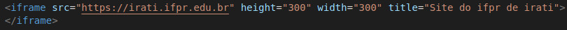
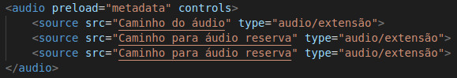
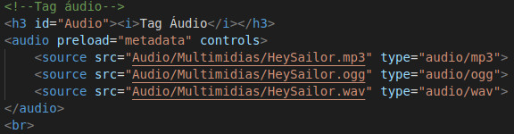
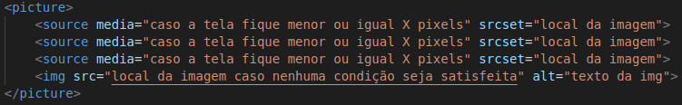
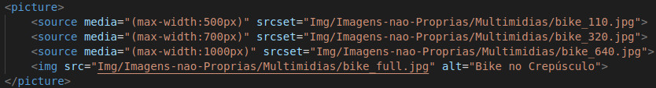

A tag iframe serve para incorporar um documento multimídia, como áudios, vídeos, imagens, sites, etc. Exemplo:

Site anexado com o iframe:
É similar a Tag de vídeo mas destinada para áudios. Veja um exemplo abaixo:
A tag <audio> permite a inclusão de arquivos sonoros em páginas web, utilizando o atributo preload para definir se os metadados, como a duração do áudio, devem ser carregados antecipadamente pelo navegador. Além disso, o atributo controls é fundamental para exibir a interface padrão de reprodução, que inclui botões de play, pause, volume e a barra de progresso, garantindo que o usuário possa interagir com o conteúdo de forma intuitiva
A tag <source>, quando utilizada dentro do elemento <audio>, possui a mesma funcionalidade que na tag <video>, servindo para especificar múltiplos arquivos de mídia em diferentes formatos, como MP3 ou OGG. Exemplo:


A tag <picture> é um elemento de imagem responsiva que permite oferecer diferentes versões de um arquivo gráfico com base em condições específicas, como a largura da tela ou a densidade de pixels. Ao utilizar tags <source> internas com o atributo media, o desenvolvedor pode definir pontos de interrupção para trocar automaticamente a imagem exibida, garantindo que o usuário visualize a versão mais adequada para o seu dispositivo, seja um smartphone ou um monitor de alta resolução. Veja um exemplo abaixo:
O elemento <picture> funciona como um contêiner para as tags <source> e uma tag <img> obrigatória, que serve como fallback caso nenhuma das condições anteriores seja atendida ou o navegador não suporte o elemento. Cada tag <source> utiliza o atributo media para definir a regra de consulta (como a largura máxima da tela) e o atributo srcset para especificar o caminho da imagem correspondente, permitindo que o navegador selecione e renderize a fonte de mídia mais adequada conforme o cenário satisfaça a condição estabelecida. Exemplo:

